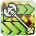
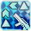
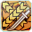

Phantom is the second scion class released for PSO2. It requires you to have two classes at 75+, and unlocks the ability to become a Phantom on any character. It is a tech-based class. Like Hero, it cannot take a subclass, but it can be used as a subclass. It uses Rifles, Katanas, and Rods (Yes, those scythe looking weapons are Rods) as it's main weapons. Please keep in mind that, unlike Hero, you don't need to swap weapons to build a gauge. You can stick with one weapon if you want. It's recommended you build a Rod-based Phantom, although Rifle and Katana Phantom builds can do just fine too, with practice!
If the Hero class is a class made up of heroes and justice, the Phantom class is made up of villains - Those who use the dark and forbidden powers. Similar to Hero, Phantom uses existing weapons in different ways, as seen below:
Rifle: Gone are the days of emptying your clip - Rifle shots are single "sniper" type shots now. To make up for it, they do much more damage with each shot. Your weapon action will send out bits that can attack while you dodge or attack. Charging your weapon action fires a strong shot.
Katana: While everyone else was goofing off, you were studying the blade - and it shows! Aside from unique animations, Katana largely plays the same. Your weapon action is a ranged slash.
Rod: Smack them with the pointy end! Rods now do good damage when used as a melee weapon, so you can do damage while regaining PP. However, since Phantom is a tech class, you should be mainly casting techs with your Rod. After each casted tech, you'll do either a short or long slash with your rod (depending on the tech), which gives you 6 PP if it connects. By keeping the correct distance for each tech, you can keep attacking (while regaining PP) a lot longer than you would otherwise. Using the weapon action shoots a small laser at the enemy, and charging the weapon action the weapon action does a ranged slash with it.
Markers
Phantom has a few unique mechanics. First off, you have the Phantom Markers. Essentially, as you hit an enemy over and over (with physical attacks, PAs, or Techs), you'll build a "marker" on them, indicated by a blue or purple symbol on whatever part you hit last. Holding and releasing the weapon action (this is called shifting) on any Phantom weapon will "detonate" these markers with various effects, depending on how many hits are put in and other factors. Keep in mind that these markers will disappear if you don't hit the enemy for a few seconds.
There are two types of markers - blue and purple. Blue markers recover 30 PP when detonated, along with some nice damage. Purple markers are maxed, do large amounts of damage, and recover 50 PP per. Marker detonations are also Area Of Effect attacks, so using zondeel or another pull-in effect when possible before detonating is recommended, but not required.
Since you build markers with each hit, there are some ways to build markers very quickly - using Rabarta, for example, will build a blue marker in less than 3 casts, and a purple marker within 4 - 5 casts during Phantom Time. "But Aida, what is Phantom time???" you ask. We'll go over that soon, don't worry!
Shift PAs
When you hit the Weapon Action button and then use a Photon Art, it will cast a "Shift PA" instead. Each PA has a "Shift" version that does different things depending on the PA. You can cast a shift PA by using the Weapon Action and then the PA, or cast the PA and then hit the Weapon Action after to do both the normal PA followed by the shift PA.
For example, the Rifle PA Kugelsturm usually shoots a wide shot. However, if you use the weapon action button before it, it changes into a full auto rifle shot for as long as the button is held down.
Maximum PP
Everyone likes having a lot of PP, but Phantom really likes it. In fact, a skill on the Phantom Tree will actually increase your damage depending on your max PP. Try to have at least 200 PP, at bare minimum. More is recommended!
Counter Shot
When you do a successful counter dodge (dodging at the right time makes a noise just like hero dodging), you've stored a "counter shot". The next time you use a normal attack, step attack, PA, or technique, you'll shoot tracking lasers at the enemy as well. There's a slight delay in shooting the lasers when using a tech, so you can dodge to cancel the shot if you want to save it for uptime.
Rod Combo (Tech)
Charged Ilgrants -> Charged Ilgrants -> Normal Attack (This will do the third part of the normal attack) -> Repeat
This is your "boss that loves to stand still" combo. Because of how the Rod regens PP with it's third normal, you can spam this for quite some time. Feel free to swap Ilgrants for Gizonde, Gimegid, or Samegid (depending on the enemy's element).
Rod Combo (Striking)
Schwarze Katze -> Schwarze Katze -> Normal Attack (This will do the third part of the normal attack) -> Repeat
A super efficient combo for enemies weak to striking damage multipliers (Elder/weak points on enemies).
Rod DoT Combo
You should always try to weave in Crafted Ramegid + Shifted Massenvernichtungs when possible, as it does Damage Over Time (and builds marker!)
Other Combos
There are no other set combos! You should just spam techs that do the most damage (opposite element) while countering, when possible.
Rifle Combo 1
Spam any rifle PA (besides Shift Strafe or Vebrechen) twice, then do the 3rd normal attack (This will do the third part of the normal attack) -> Repeat
The reasoning being that Shift Strafe is for mobbing or when you know a boss is going to be somewhere, and Vebrechen because it's very situational and niche.
Rifle DoT Combo
Shifted Verbrechen -> Strafe
Try to keep this up whenver you can - Free damage!
Katana Combo
Folterzeit -> Folterzeit -> Normal Attack (This will do the third part of the normal attack) -> Repeat
Even with this combo (or any other), PP regen on Katana is pretty bad. If you have more MEL PWR than TEC PWR (You shouldn't!), this combo will be better than the Rod striking combo.
Your main objective as a Phantom (while looking edgy and dark) is to build focus for your Phantom Time by countering, avoiding damage, and using different skills. There is a gauge at the center of your subpallete, and once it fills you can activate Phantom Time and become the storm that is approaching!
Phantom Time is similar to Hero Time in that you build it up by attacking and countering. You don't need to use different moves like Hero, though there is a limit and cooldown on how much gear you can gain from each move. Just switch to a different PA or technique if you notice your focus gauge isn't increasing.
Phantom Time lasts 20 seconds, and makes you invincible for the first 5 seconds. Your i-frames (invincibility frames, moments where you can't be hit) become longer, and PP consumption is reduced by 20%. Once you learn the "Phantom Time Mark Plus" skill, you will also build markers much faster during Phantom Time. You can hold 2 charges of Phantom Time.
Mobbing
Rod: Just spam Gigrants/Rabarta/Ilzan.
Rifle: Just spam Kugelsturm or Shifted Nachtangriff.
Katana: ???
Skill Tree/Skills
A typical Phantom skill tree can be found by checking the PSO2NA Class Builds Compilation. Remember that percentage multipliers are always better than straight additions, so a 5% increase to something will almost always be better than doing +5 to it.
Rings
Left Rings
- Phantom Lock-On Bomb: Marker detonation can be very weird at times. This ring lets you detonate your marker on whatever piece of enemy you're locked onto. HIGHLY RECOMMENDED!
- Phantom Marker Bomb: As said above, marker detonation can be very wonky. This ring, while very situational, can let you detonate where the Phantom marker was originally placed if you cannot lock on to the enemy (Looking at you, Gal Gryphon!).
- Atomizer Fanatic: Speeds up the consumption animation of Moon/Sol/Star Atomizers and increases their recovery rate.
 Party Toughness: Reduces damage taken based on the number of players in your Party. Does nothing if you're solo.
Party Toughness: Reduces damage taken based on the number of players in your Party. Does nothing if you're solo.
- Leaping Dodge: Gives you a active skill that lets you jump super high.
- Mag Excitement: Increases the power of your Mag's Auto Action and reduces its cooldown.
You can slot 3 of these into units, then just wear the last one as a normal ring.
Right Rings
- Critical Strike (Combo Ring): Increases your crit power for all 3 attack stats by 3% and your crit rate for all 3 stats by 20% (at level 20)
Techniques
Phantom can use techniques, and some of them are highly recommended for certain situations.
- Resta: Heals you and the people around you.
 Megiverse: Generates a field that heals anyone in it when they inflict damage on enemies.
Megiverse: Generates a field that heals anyone in it when they inflict damage on enemies.- Anti: Cures status effects for you and the people around you.
- Zondeel: Used to pull enemies from the surrounding area into one spot so you can kill them all at once. It's recommended that you also craft this to make its range wider.
- Zanverse: Generates a field of wind around you and makes you and everyone around you deal bonus wind damage. Free damage!
Mag
Your Mag's dex stats are distributed evenly to all three stats (Melee, Ranged, Tech) - This means you should ideally have a 200 point DEX mag.
Affixes
If possible, you want to affix Phrase Decay onto your Phantom weapons - It gives an extra 5% damage if Jellen is applied to it.
Movement skills
Like other classes, Phantom has some skills that people can use to move rapidly as opposed to just running. Gotta go fast!
- Shifted Nachtangriff (Rifle PA):
Naruto runsSprints for as long as the button is held. Not much to explain here, uses PP. - Crafted Safoie /C (Technique): Moves forward but also changes your altitude so you can hit enemies in the air or weak spots above the ground level.
- Ilzonde (Technique): Moves forward and through enemies, does not change altitude.
{kind=link}
Why do people call Phantom the edgelord class?
https://youtu.be/Mw0Wsq1ligE?t=104
- airoh. for letting me steal their layout for the initial version of this guide
- Advisors on Phantasy Star Fleet for advice/information
- Enfonius for teaching me how to be a pro Phantom (and their in-depth Phantom guide!)
- Arks Visiphone for icons and data
- Shadow The Hedgehog, for being the original Phantom edgelord.
November 21st, 2020
Final revision before going public!
November 6th, 2020
Man, I am bad at changelogs. I uh, added a bunch of stuff? Sorry.
November 1st, 2020
Initial version, working on it far in advance this time!